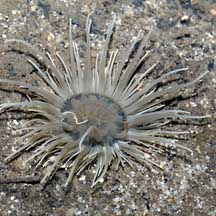
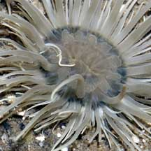
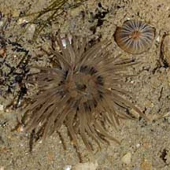
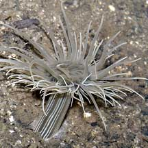
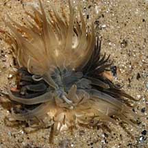
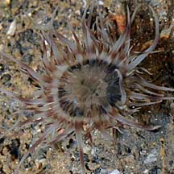

|
|
| sea anemones text index | photo index |
| Phylum Cnidaria > Class Anthozoa > Subclass Zoantharia/Hexacorallia > Order Actiniaria |
| Petal-mouthed
mangrove anemone Stephensonactis ornata Family Haliactiidae updated Dec 2024 Where seen? This beautiful anemone with 'petals' around its mouth is sometimes seen on our Northern shores. Can be seen in large numbers in very soft silty mudflats near mangroves. A few individuals may be seen in other silty sandy shores near freshwater inputs. Features: Diameter with tentacles expanded 3-6cm. Tentacles many, with pointed tips, generally pale white to beige, some with broad, diffuse bands. One upper ring of longer, thicker tentacles. Below, another ring of many shorter, thinner tentacles. Oral disk often with darker margin. Mouth ringed with pale petal-like structures. Body column may be pale or dark, is smooth with fine white stripes. It can tuck its tentacles into its body column. Status and threats: There is inadequate information as at 2024 to make an informed assesment of its conservation status in Singapore. |
 Sungei Buloh Wetland Reserve, Nov 03 |
 Mouth ringed with petal-like structures. |
 Pasir Ris Park, Dec 08 |
|
 Sungei Buloh Wetland Reserve, Nov 03 |
 Sembawang, Dec 08 |
 Woodlands, Jul 08 |
| Petal-mouthed mangrove anemones on Singapore shores |
On wildsingapore
flickr
|
| Other sightings on Singapore shores |
Acknowledgements
|